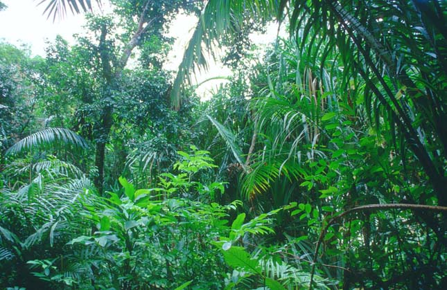
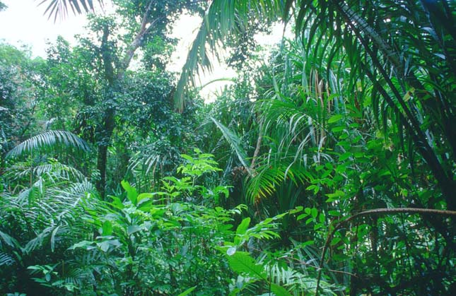

Itt a napsugarak beesési szöge 90°- 66,5° közötti, ezért a hőmérséklet viszonylag állandó, 25-27 °C között változik. Az évi hőingás 2,5 °C-nál is kevesebb, így a napi hőingás nagyobb, mint az évi. Egész évben csapadékos, a lehullott csapadék mennyisége a 2000 millimétert is meghaladja. Csak egy évszak alakul ki, a meleg, csapadékos és fülledt nyár. Az Egyenlítő közelében alakult ki, jellemző az Amazonas-medencében, Közép-Amerika szigetvilágában, a Kongó-medencében, Ceylon és Óceánia területein. Természetes növénytakarója az esőerdő.
 

Az egyenlítői öv élővilága
A gorilla
A gorillák Afrikában honosak, a legnagyobb termetű emberszabású majmok. Családi csoportokban élnek, a csoportot egy hatalmas, ezüstös hátú hím vezeti. Szinte kizárólag növényeket fogyasztanak.
A jaguár
A jaguár Dél-Amerika legnagyobb testű ragadozója. Teste hajlékony, ruganyos, látása, hallása rendkívül éles. Párnás talpán gyorsan és nesztelenül jár, de kiválóan mászik fára is. Karmai ujjpárnáiba visszahúzhatók, nem kopnak, ezért mindig éles és hegyes fegyverek maradnak. Bundája foltos vagy egyszínű fekete lehet.
A kolibrik
A kolibrik Amerikában élnek. Apró termetűek, sokuk tollazata fémesen csillogó. A virágok előtt rendkívül gyors szárnycsapásokkal egy helyben lebegnek, hosszú szívócsőrüket nagy pontossággal nyújtják vagy szúrják a virágok kelyhébe, ahonnan kiszívják a cukros nedvet.
A papagáj
A papagájok legtöbb faja Dél-Amerikában él. Csőrük erős kampóban végződik, amely alkalmas a keményebb magok feltörésére is. Lábaikkal és csőrük segítségével kapaszkodnak a fák ágain.

A hárpia
A hárpia óriásfákra rakja fészkét, innen tart őrjáratot az esőerdő felett. Erős, kampós csőre, hatalmas karmai félelmetes vadászszá teszik. Majmokat, lajhárokat, más madarakat zsákmányol.
A királykobra
A királykobra mérges kígyó, testhossza eléri az 5 métert. Más kígyókkal, rágcsálókkal és madarakkal táplálkozik. Ázsia sűrű erdőségeiben él.
A fekete kajmán
A fekete kajmán is krokodil, a dél-amerikai esőerdők lakója. A kíméletlen irtás miatt természetes élőhelyeiről csaknem teljesen eltűnt, ezért fokozott védelem alatt áll.
A madárpók
A madárpókok testét kitinszőrök borítják. A legnagyobbak átmérője kb. 20 cm. Napjainkban egyes fajaik házi kedvencekké váltak.